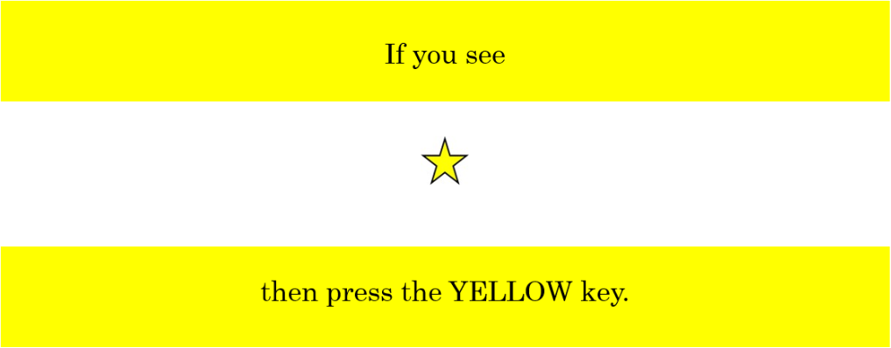
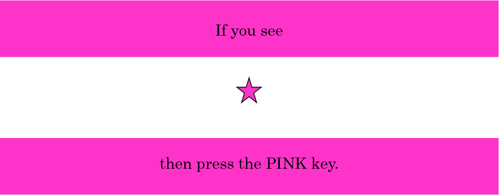

<!DOCTYPE html>
<html>
  <head>
    <title>Stop Signal Task</title>
    <script src="jspsych-6.1.0/jspsych.js"></script>
    <script src="jspsych-6.1.0/plugins/jspsych-html-keyboard-response.js"></script>
    <script src="jspsych-6.1.0/plugins/jspsych-nogo.js"></script>
    <script src="jspsych-6.1.0/plugins/jspsych-go.js"></script>
    <script src="jspsych-6.1.0/plugins/jspsych-fullscreen.js"></script>
    <script src="jspsych-6.1.0/plugins/jspsych-audio-keyboard-response.js"></script>
    <script src="jspsych-6.1.0/plugins/jspsych-survey-text.js"></script>
    <script src="jspsych-6.1.0/plugins/jspsych-survey-likert.js"></script>
    <script src="jspsych-6.1.0/plugins/jspsych-html-slider-response.js"></script>
    <link href="jspsych-6.1.0/css/jspsych.css" rel="stylesheet" type="text/css"/>
    <audio id = sound> <source src = "sound/testSound.wav" </audio>
    <audio id = correct> <source src = "sound/correct.wav" </audio>
    <audio id = incorrect> <source src = "sound/incorrect.wav" </audio>
  </head>
  <body></body>
  <script>

    /* create timeline */
    var timeline = [];

    /* Initial SSD */
    var pSSD = 250;

    /* Define sounds */
    let audio_stimulus = document.getElementById('sound');
    let correct_sound = document.getElementById('correct');
    let incorrect_sound = document.getElementById('incorrect');

    /* make fullscreen */
    timeline.push({
      type: 'fullscreen',
      fullscreen_mode: true
    });

    /*Enter participant ID */
    var participant_number = {
      type: 'survey-text',
      questions: [
        {prompt: "Enter participant number"},
      ],
      data: {test_part: 'participant_number'},
      on_finish: function(data) {
        var responses = JSON.parse(data.responses);
        var code = responses.Q0;
        jsPsych.data.addProperties({participantID: code});
      }
    };
    timeline.push(participant_number);

    /* define white screen trial */
    var white_screen = {
      type: "html-keyboard-response",
      stimulus: "",
      choices: jsPsych.NO_KEYS,
      trial_duration: 500,
      data: {test_part: 'blank', collect_data: false},
    };

    /* define welcome message trial */
    var welcome = {
      type: "html-keyboard-response",
      stimulus: "Welcome to the experiment. Press any key to begin."
    };
    timeline.push(welcome);

     var oneToTen = [
       "1 (not at all engaged)",
       "2",
       "3",
       "4",
       "5",
       "6",
       "7",
       "8",
       "9",
       "10 (fully engaged)"
     ];

     var oneToSevenMotivation = [
       "1 (not motivated at all)",
       "2",
       "3",
       "4",
       "5",
       "6",
       "7 (very motivated)"
     ];

     var oneToSevenConfidence = [
       "1 (not confident at all)",
       "2",
       "3",
       "4",
       "5",
       "6",
       "7 (very confident)"
     ];

     var mind_wandering_scale = [
       "(a)",
       "(b)",
       "(c)"
     ];

     var likert_scale = [
       "Strongly Disagree",
       "Disagree",
       "Neutral",
       "Agree",
       "Strongly Agree"
    ];

     var engagement_questions = {
       type: 'survey-likert',
       data: {collect_data: true, stimulus: 'N/A', key_press: 'N/A', test_part: 'engagement', correct_response: 'N/A', new_SSD: 'N/A', correct: 'N/A', practice: 'N/A', response: 'N/A'},
       questions: [
         {prompt: "Overall, how engaged were you throughout this task on a scale of 1 to 10?", name: 'engagement', labels: oneToTen},
         {prompt: "How motivated were you to perform well on the task?", name: 'motivation', labels: oneToSevenMotivation},
         {prompt: "While you were completing this task, how confident were you in your performance?", name: 'confidence', labels: oneToSevenConfidence} ],
     };

    var mind_wandering = {
      type: 'html-slider-response',
      stimulus: '<p>Please answer using the sliding scale. Just before the onset of the probe you were...</p>',
      labels: ['Completely on task', 'Completely off task'],
      data: {collect_data: true, stimulus: 'N/A', key_press: 'N/A', test_part: 'mind_wandering_slider', correct_response: 'N/A', new_SSD: 'N/A', correct: 'N/A', practice: 'N/A', responses: 'N/A'},
    };

    var mind_wandering2 = {
       type: 'survey-likert',
       data: {collect_data: true, stimulus: 'N/A', key_press: 'N/A', test_part: 'mind_wandering_mc', correct_response: 'N/A', new_SSD: 'N/A', correct: 'N/A', practice: 'N/A', response: 'N/A'},
       questions: [
         {prompt: "Throughout the task were you: (a) on task, (b) thinking about your performance on the task, or (c) thinking about task-unrelated thoughts", name: 'mind wandering 2', labels: mind_wandering_scale},
       ]
     };

    var resume = {
      type: "html-keyboard-response",
      stimulus: "Press any key to continue the experiment.",
      post_trial_gap: 2000
    };

     var probe = {
       timeline: [engagement_questions, mind_wandering, mind_wandering2, resume]
     };

     var PANPS = {
       type: 'survey-likert',
       data: {collect_data: true, stimulus: 'N/A', key_press: 'N/A', test_part: 'PANPS', correct_response: 'N/A', new_SSD: 'N/A', correct: 'N/A', practice: 'N/A', response: 'N/A'},
       questions: [
         {prompt: "When I start something I feel anxious that I might fail", name: '1', labels: likert_scale},
         {prompt: "My family and friends are proud of me when I do really well", name: '2', labels: likert_scale},
         {prompt: "I take pride in being meticulous when doing things", name: '3', labels: likert_scale},
         {prompt: "I set impossibly high standards for myself", name: '4', labels: likert_scale},
         {prompt: "I try to avoid the disapproval of others at all costs.", name: '5', labels: likert_scale},
         {prompt: "I like the acclaim I get for an outstanding performance", name: '6', labels: likert_scale},
         {prompt: "When I am doing something I cannot relax until it’s perfect", name: '7', labels: likert_scale},
         {prompt: "It feels as though my best is never good enough for other people", name: '8', labels: likert_scale},
         {prompt: "Producing a perfect performance is a reward in its own right", name: '9', labels: likert_scale},
         {prompt: "The problem of success is that I must work even harder", name: '10', labels: likert_scale},
         {prompt: "If I make a mistake I feel that the whole thing is ruined", name: '11', labels: likert_scale},
         {prompt: "I feel dissatisfied with myself unless I am working towards a higher standard all the time", name: '12', labels: likert_scale},
         {prompt: "I know the kind of person I ought or want to be, but feel I always fall short of this", name: '13', labels: likert_scale},
         {prompt: "Other people respect me for my achievements", name: '14', labels: likert_scale},
         {prompt: "As a child however well I did, it never seemed good enough to please my parents", name: '15', labels: likert_scale},
         {prompt: "I think everyone loves a winner", name: '16', labels: likert_scale},
         {prompt: "Other people expect nothing less than perfection of me", name: '17', labels: likert_scale},
         {prompt: "When I am competing against others, I am motivated by wanting to be the best", name: '18', labels: likert_scale},
         {prompt: "I feel good when pushing out the limits", name: '19', labels: likert_scale},
         {prompt: "When I achieve my goals I feel dissatisfied", name: '20', labels: likert_scale},
         {prompt: "My high standards are admired by others", name: '21', labels: likert_scale},
         {prompt: "If I fail people, I fear they will cease to respect or care for me", name: '22', labels: likert_scale},
         {prompt: "I like to please other people by being successful", name: '23', labels: likert_scale},
         {prompt: "I gain great approval from others by the quality of my accomplishments", name: '24', labels: likert_scale},
         {prompt: "My successes spur me on to greater achievements", name: '25', labels: likert_scale},
         {prompt: "I feel guilty or ashamed if I do less than perfectly.", name: '26', labels: likert_scale},
         {prompt: "No matter how well I do I never feel satisfied with my performance", name: '27', labels: likert_scale},
         {prompt: "I believe that rigorous practice makes for perfection", name: '28', labels: likert_scale},
         {prompt: "I enjoy the glory gained by successes", name: '29', labels: likert_scale},
         {prompt: "I gain deep satisfaction when I have perfected something", name: '30', labels: likert_scale},
         {prompt: "I feel I have to be perfect to gain peoples approval", name: '31', labels: likert_scale},
         {prompt: "My parents encouraged me to excel.", name: '32', labels: likert_scale},
         {prompt: "I worry what others think if I make mistakes", name: '33', labels: likert_scale},
         {prompt: "I get fulfillment from totally dedicating myself to a task", name: '34', labels: likert_scale},
         {prompt: "I like it when others recognize that what I do requires great skill and effort to perfect", name: '35', labels: likert_scale},
         {prompt: "The better I do, the better I am expected to do by others", name: '36', labels: likert_scale},
         {prompt: "I enjoy working towards greater levels of precision and accuracy", name: '37', labels: likert_scale},
         {prompt: "I would rather not start something than risk doing it less than perfectly", name: '38', labels: likert_scale},
         {prompt: "When I do things I feel others will judge critically the standard of my work", name: '39', labels: likert_scale},
         {prompt: "I like the challenge of setting very high standards for myself", name: '40', labels: likert_scale},
       ],
     };

     var BigFive = {
       type: 'survey-likert',
       preamble: "On a scale from strongly disagree to strongly agree, rate how well the following statements describe you.",
       data: {collect_data: true, stimulus: 'N/A', key_press: 'N/A', test_part: 'Big Five', correct_response: 'N/A', new_SSD: 'N/A', correct: 'N/A', practice: 'N/A', response: 'N/A'},
       questions: [
         {prompt: "Is talkative", name: '1', labels: likert_scale},
         {prompt: "Tends to find fault with others", name: '2', labels: likert_scale},
         {prompt: "Does a thorough job", name: '3', labels: likert_scale},
         {prompt: "Is depressed, blue", name: '4', labels: likert_scale},
         {prompt: "Is original, comes up with new ideas", name: '5', labels: likert_scale},
         {prompt: "Is reserved", name: '6', labels: likert_scale},
         {prompt: "Is helpful and unselfish with other", name: '7', labels: likert_scale},
         {prompt: "Can be somewhat careless", name: '8', labels: likert_scale},
         {prompt: "Is relaxed, handles stress well", name: '9', labels: likert_scale},
         {prompt: "Is curious about many different things", name: '10', labels: likert_scale},
         {prompt: "Is full of energy", name: '11', labels: likert_scale},
         {prompt: "Starts quarrels with others", name: '12', labels: likert_scale},
         {prompt: "Is a reliable worker", name: '13', labels: likert_scale},
         {prompt: "Can be tense", name: '14', labels: likert_scale},
         {prompt: "Is ingenious, a deep thinker", name: '15', labels: likert_scale},
         {prompt: "Generates a lot of enthusiasm", name: '16', labels: likert_scale},
         {prompt: "Has a forgiving nature", name: '17', labels: likert_scale},
         {prompt: "Tends to be disorganized", name: '18', labels: likert_scale},
         {prompt: "Worries a lot", name: '19', labels: likert_scale},
         {prompt: "Has an active imagination", name: '20', labels: likert_scale},
         {prompt: "Tends to be quiet", name: '21', labels: likert_scale},
         {prompt: "Is generally trusting", name: '22', labels: likert_scale},
         {prompt: "Tends to be lazy", name: '23', labels: likert_scale},
         {prompt: "Is emotionally stable, not easily upset", name: '24', labels: likert_scale},
         {prompt: "Is inventive", name: '25', labels: likert_scale},
         {prompt: "Has an assertive personality", name: '26', labels: likert_scale},
         {prompt: "Can be cold and aloof", name: '27', labels: likert_scale},
         {prompt: "Perseveres until the task is finished", name: '28', labels: likert_scale},
         {prompt: "Can be moody", name: '29', labels: likert_scale},
         {prompt: "Values artistic, aesthetic experiences", name: '30', labels: likert_scale},
         {prompt: "Is sometimes shy, inhibited", name: '31', labels: likert_scale},
         {prompt: "Is considerate and kind to almost everyone", name: '32', labels: likert_scale},
         {prompt: "Does things efficiently", name: '33', labels: likert_scale},
         {prompt: "Remains calm in tense situations", name: '34', labels: likert_scale},
         {prompt: "Prefers work that is routine", name: '35', labels: likert_scale},
         {prompt: "Is outgoing, sociable", name: '36', labels: likert_scale},
         {prompt: "Is sometimes rude to others", name: '37', labels: likert_scale},
         {prompt: "Makes plans and follows through with them", name: '38', labels: likert_scale},
         {prompt: "Gets nervous easily", name: '39', labels: likert_scale},
         {prompt: "Likes to reflect, play with ideas", name: '40', labels: likert_scale},
         {prompt: "Has few artistic interests", name: '41', labels: likert_scale},
         {prompt: "Likes to cooperate with others", name: '42', labels: likert_scale},
         {prompt: "Is easily distracted", name: '43', labels: likert_scale},
         {prompt: "Is sophisticated in art, music, or literature", name: '44', labels: likert_scale},
       ],
     };

    var Perfectionism = {
      type: 'survey-likert',
      preamble: "Rate your level of agreement on the following questions on a scale from strongly disagree to strongly agree.",
      data: {collect_data: true, stimulus: 'N/A', key_press: 'N/A', test_part: 'perfectionism', correct_response: 'N/A', new_SSD: 'N/A', correct: 'N/A', practice: 'N/A', response: "N/A"},
      questions: [
        {prompt: "My parents set very high standards for me", name: '1', labels: likert_scale},
        {prompt: "Organization is very important to me", name: '2', labels: likert_scale},
        {prompt: "As a child, I was punished for doing things less than perfectly", name: '3', labels: likert_scale},
        {prompt: "If I do not set the highest standards for myself, I am likely to end up a second rate person", name: '4', labels: likert_scale},
        {prompt: "My parents never tried to understand my mistakes", name: '5', labels: likert_scale},
        {prompt: "It is important to me that I be thoroughly competent in everything I do", name: '6', labels: likert_scale},
        {prompt: "I am a neat person", name: '7', labels: likert_scale},
        {prompt: "I try to be an organized person", name: '8', labels: likert_scale},
        {prompt: "If I fail at work/school, I am a failure as a person", name: '9', labels: likert_scale},
        {prompt: "I should be upset if I make a mistake", name: '10', labels: likert_scale},
        {prompt: "My parents wanted me to be the best at everything", name: '11', labels: likert_scale},
        {prompt: "I set higher goals for myself than most people", name: '12', labels: likert_scale},
        {prompt: "If someone does a task at work/school better than me, then I feel like I failed the whole task", name: '13', labels: likert_scale},
        {prompt: "If I fail partly, it is as bad as being a complete failure", name: '14', labels: likert_scale},
        {prompt: "Only outstanding performance is good enough in my family", name: '15', labels: likert_scale},
        {prompt: "I am very good at focusing my efforts on attaining a goal", name: '16', labels: likert_scale},
        {prompt: "Even when I do something very carefully, I often feel that it is not quite done right", name: '17', labels: likert_scale},
        {prompt: "I hate being less than the best at things", name: '18', labels: likert_scale},
        {prompt: "I have extremely high goals", name: '19', labels: likert_scale},
        {prompt: "My parents have expected excellence from me", name: '20', labels: likert_scale},
        {prompt: "People will probably think less of me if I make a mistake", name: '21', labels: likert_scale},
        {prompt: "I never felt like I could meet my parents expectations", name: '22', labels: likert_scale},
        {prompt: "If I do not do as well as other people, it means I am an inferior human being", name: '23', labels: likert_scale},
        {prompt: "Other people seem to accept lower standards from themselves than I do", name: '24', labels: likert_scale},
        {prompt: "I do not do well all the time, people will not respect me", name: '25', labels: likert_scale},
        {prompt: "My parents have always had higher expectations for my future than I have", name: '26', labels: likert_scale},
        {prompt: "I try to be a neat person", name: '27', labels: likert_scale},
        {prompt: "I usually have doubts about the simple everyday things I do", name: '28', labels: likert_scale},
        {prompt: "Neatness is very important to me", name: '29', labels: likert_scale},
        {prompt: "I expect higher performance in my daily tasks than most people", name: '30', labels: likert_scale},
        {prompt: "I am an organized person", name: '31', labels: likert_scale},
        {prompt: "I tend to get behind in my work because I repeat things over and over", name: '32', labels: likert_scale},
        {prompt: "It takes me a long time to do something right", name: '33', labels: likert_scale},
        {prompt: "The fewer mistakes I make, the more people will like me", name: '34', labels: likert_scale},
        {prompt: "I never felt like I could meet my parents standards", name: '35', labels: likert_scale},
      ],
    };

    rand_survey = jsPsych.randomization.shuffle([PANPS, BigFive, Perfectionism]);
    timeline = timeline.concat(rand_survey[0], rand_survey[1], rand_survey[2]);

    /* Introduce ITI */
    var ITI_info = {
      type: "html-keyboard-response",
      stimulus: "<p><font size='6'>When you begin, you will see</font></p>" +
          "<br style = “line-height:50;”> <br><div style=\"font-size:60px;\">+</div>" +
          "<br style = “line-height:50;”> <br><p><font size='6'>In the middle of the screen.</font></p>",
    };
    timeline.push(ITI_info);

    /* Introduce image stimuli */
    var introduce_stimuli = {
      type: "html-keyboard-response",
      stimulus: "<p><font size='6'>Then you will see either</font></p>" +
          "<div style='width: 700px;'>"+
            "<br><br><div style='float: left;'></div></img>" +
          "<div style='float: right;'></div></img>" +
          "<br><font size='6'><strong>or</strong></font>" +
          "<br style = “line-height:50;”><br><br><br><p><font size='6'>In the middle of the screen.</font></p>",
    };
    timeline.push(introduce_stimuli);

    /* Response instructions */
    var yellow_star_instruction = {
      type: "html-keyboard-response",
      stimulus: "</img>"
    };
    timeline.push(yellow_star_instruction);

    var pink_star_instruction = {
      type: "html-keyboard-response",
      stimulus: "</img>"
    };
    timeline.push(pink_star_instruction);

    var be_fast = {
      type: "html-keyboard-response",
      stimulus: "<p><font size='6'>Respond as fast as you can without making a mistake</font></p>",
    };
    timeline.push(be_fast);

    var sound_instructions = {
      type: "html-keyboard-response",
      stimulus: "<p><font size='6'>If you hear a DING, it means you made the correct response</font></p>" +
              "<br><br><br><br><p><font size='6'>If you hear a BUZZ, it means you made the incorrect response</font></p>",
    };
    timeline.push(sound_instructions);

    var ready_practice = {
      type: "html-keyboard-response",
      stimulus: "<p><font size='6'>Ready to practice?</font></p>" +
              "<br><br><br><br><p><font size='6'>Press any key to continue</font></p>",
      post_trial_gap: 2000
    };
    timeline.push(ready_practice);

    /* Define ITI trial */
    var fixation = {
      type: 'html-keyboard-response',
      stimulus: '<div style="font-size:60px;">+</div>',
      choices: jsPsych.NO_KEYS,
      trial_duration: 500,
      data: {test_part: 'ITI', collect_data: false},
      };

    /* Define yellow star nogo trial */
    var y_nogo;
    y_nogo = {
      type: "nogo",
      stimulus: 'img/Yellowstar.jpg',
      choices: ['d', 'l'],
      trial_duration: 1000,
      SSD: pSSD,
      data: {test_part: 'y_nogo', correct_response: 'null', new_SSD: '', collect_data: true, practice: false, response: 'N/A', responses: 'N/A'},
      on_finish: function (data) {

        /* Response is correct if it matches the correct_response parameter */
        data.correct = data.key_press == jsPsych.pluginAPI.convertKeyCharacterToKeyCode(data.correct_response);

        /* If response time is -250, consider it "null". (code taken from other SST) */
        if (data.rt == -250) {
          data.rt = null
        }
        /* If response is correct, increase SSD */
        if (data.correct === true) {
          if (window.pSSD < 500) {
            window.pSSD = window.pSSD + 50;
            data.new_SSD = window.pSSD;
          }
        }

        /* If response is incorrect, decrease SSD */
        else if (data.correct === false) {
          if (window.pSSD > 50) {
            window.pSSD = window.pSSD - 50;
            data.new_SSD = window.pSSD;
          }
        }
        data.new_SSD = window.pSSD
        }
      };

      /* Define pink star nogo trial */
      var p_nogo = {
        type: "nogo",
        stimulus: 'img/Pinkstar.jpg',
        choices: ['d', 'l'],
        trial_duration: 1000,
        SSD: pSSD,
        data: {test_part: 'p_nogo', correct_response: 'null', new_SSD: '', collect_data: true, practice: false, response: 'N/A', responses: 'N/A'},
        on_finish: function (data) {

          /* Response is correct if it matches the value for the correct_response parameter */
          data.correct = data.key_press == jsPsych.pluginAPI.convertKeyCharacterToKeyCode(data.correct_response);

          /* If response time is -250, consider it "null". (code taken from other SST) */
          if (data.rt == -250) {
            data.rt = null
          }
          /* If response is correct, increase SSD */
          if (data.correct === true) {
            if (window.pSSD < 500) {
              window.pSSD = window.pSSD + 50;
              data.new_SSD = window.pSSD;
            }
          }
          /* If response is incorrect, decrease SSD */
          else if (data.correct === false) {
            if (window.pSSD > 50) {
              window.pSSD = window.pSSD - 50;
              data.new_SSD = window.pSSD;
            }
          }
          data.new_SSD = window.pSSD
        }
      };

    /* Define yellow star go trial */
    var y_go = {
      type: "go",
      stimulus: 'img/Yellowstar.jpg',
      choices: ['d', 'l'],
      trial_duration: 1000,
      response_ends_trial: true,
      data: {test_part: 'y_go', correct_response: 'd', collect_data: true, new_SSD: 'N/A', practice: false, response: 'N/A', responses: 'N/A'},
      on_finish: function(data) {

        /* Response is correct if it matches the value for the correct_response parameter */
        data.correct = data.key_press == jsPsych.pluginAPI.convertKeyCharacterToKeyCode(data.correct_response);

        /* If response time is -250, consider it "null". (code taken from other SST) */
        if (data.rt == -250) {
          data.rt = null
        }

        /* Early responses are false */
        if (data.rt < 0) {
          data.correct = false;
          }
        }
      };

    /* Define yellow practice trial (has audio feedback) */
    var y_goP = {
      type: "go",
      stimulus: 'img/Yellowstar.jpg',
      choices: ['d', 'l'],
      trial_duration: 1000,
      response_ends_trial: true,
      data: {test_part: 'y_goP', correct_response: 'd', collect_data: true, new_SSD: 'N/A', practice: true, response: 'N/A', responses: 'N/A'},
      on_finish: function(data) {

        /* Response is correct if it matches the value for the correct_response parameter */
        data.correct = data.key_press == jsPsych.pluginAPI.convertKeyCharacterToKeyCode(data.correct_response);

        /* If response time is -250, consider it "null". (code taken from other SST) */
        if (data.rt == -250) {
          data.rt = null
        }
        /* Early responses are false */
        if (data.rt < 0) {
          data.correct = false;
          }
        /* Play sound depending on response */
        if (data.correct === true){
          correct_sound.play();
          }
        else if (data.correct === false) {
          incorrect_sound.play();
          }
        }
      };

    /* Define pink star go trial */
    var p_go = {
      type: "go",
      stimulus: 'img/Pinkstar.jpg',
      choices: ['d', 'l'],
      trial_duration: 1000,
      response_ends_trial: true,
      data: {test_part: 'p_go', correct_response: 'l', collect_data: true, new_SSD: 'N/A', practice: false, response: 'N/A', responses: 'N/A'},
      on_finish: function(data) {

        /* Response is correct if it matches the value for the correct_response parameter */
        data.correct = data.key_press == jsPsych.pluginAPI.convertKeyCharacterToKeyCode(data.correct_response);

        /* If response time is -250, consider it "null". (code taken from other SST) */
        if (data.rt == -250) {
          data.rt = null
        }

        /* Early responses are false */
        if (data.rt < 0) {
          data.correct = false;
          }
        }
      };

    /* Define pink star practice trial (has audio feedback) */
    var p_goP = {
      type: "go",
      stimulus: 'img/Pinkstar.jpg',
      choices: ['d', 'l'],
      trial_duration: 1000,
      response_ends_trial: true,
      data: {test_part: 'p_goP', correct_response: 'l', collect_data: true, new_SSD: 'N/A', practice: true, response: 'N/A', responses: 'N/A',},
      on_finish: function(data) {

        /* Response is correct if it matches the value for the correct_response parameter */
        data.correct = data.key_press == jsPsych.pluginAPI.convertKeyCharacterToKeyCode(data.correct_response);

        /* If response time is -250, consider it "null". (code taken from other SST) */
        if (data.rt == -250) {
          data.rt = null
        }
        /* Early responses are false */
        if (data.rt < 0) {
          data.correct = false;
          }
        /* Play sound depending on response */
        if (data.correct === true){
          correct_sound.play();
          }
        else if (data.correct === false) {
          incorrect_sound.play();
          }
        }
      };


    /* Pair each stimulus trial to an ITI trial */
    var proper_p_go = {
      timeline: [fixation, p_go, white_screen]
    };

    var proper_y_go = {
      timeline: [fixation, y_go, white_screen]
    };

    var proper_p_nogo = {
      timeline: [fixation, p_nogo, white_screen]
    };

    var proper_y_nogo = {
      timeline: [fixation, y_nogo, white_screen]
    };

    var proper_p_goP = {
      timeline: [fixation, p_goP, white_screen]
    };

    var proper_y_goP = {
      timeline: [fixation, y_goP, white_screen]
    };

    /* Put the first practice block trials into an array and randomize them */
    /* Define first practice block */
    var mixed_practice_block1 = jsPsych.randomization.shuffle([proper_p_goP, proper_p_goP, proper_p_goP, proper_p_goP, proper_p_goP, proper_p_goP, proper_p_goP,
      proper_p_goP, proper_p_goP, proper_p_goP, proper_y_goP, proper_y_goP, proper_y_goP, proper_y_goP, proper_y_goP, proper_y_goP,
      proper_y_goP, proper_y_goP, proper_y_goP, proper_y_goP, ]);

    /* Define second practice block */
    var mixed_practice_block2 = jsPsych.randomization.shuffle([proper_p_go, proper_p_go, proper_p_go, proper_p_go, proper_p_go, proper_p_go, proper_y_go,
      proper_y_go, proper_y_go, proper_y_go, proper_y_go, proper_y_go, proper_p_nogo, proper_p_nogo, proper_y_nogo, proper_y_nogo ]);

    /* Add first practice block to timeline */
    timeline = timeline.concat(mixed_practice_block1[0], mixed_practice_block1[1], mixed_practice_block1[2], mixed_practice_block1[3], mixed_practice_block1[4],
            mixed_practice_block1[5], mixed_practice_block1[6], mixed_practice_block1[7], mixed_practice_block1[8], mixed_practice_block1[9], mixed_practice_block1[10],
            mixed_practice_block1[11], mixed_practice_block1[12], mixed_practice_block1[13], mixed_practice_block1[14], mixed_practice_block1[15], mixed_practice_block1[16],
            mixed_practice_block1[17], mixed_practice_block1[18], mixed_practice_block1[19], );

    var feedback_P1 = {
      type: "html-keyboard-response",
      stimulus: function() {

        var trials = jsPsych.data.get().filter({collect_data: true});
        var correct_trials = trials.filter({correct: true});
        var accuracy = Math.round(correct_trials.count() / trials.count() * 100);
        var rt_correct_trials = Math.round(correct_trials.select('rt').mean());
        var rt = Math.round(trials.select('rt').mean());

        return "<p>Accuracy: "+accuracy+"%.</p>"+
        "<p>Response time (correct trials): "+rt_correct_trials+"ms.</p>"+
        "<p>Response time (all trials): "+rt+"ms.</p>"+
        "<p>Press any key to continue the experiment.</p>";

      }
    };
    timeline.push(feedback_P1);

    /* Create function to play stop signal sound */
    var playAudio = function() {
      audio_stimulus.play();
    };

    /* Define trial to introduce the stop signal */
    var SS_intro = {
      type: "html-keyboard-response",
      stimulus: "<p><font size='6'>Now, sometimes after seeing the picture, you will hear</font></p>" +
              "<p><font size='6'>a sound. Respond as fast as you can without making</font></p>" +
              "<p><font size='6'>mistakes, BUT if you hear the sound after the picture</font></p>" +
              "<p><font size='6'>appears, do not respond. Sometimes it will be easy to</font></p>" +
              "<p><font size='6'>stop your response and other times it will be hard to</font></p>" +
              "<p><font size='6'>stop your response. Just try your best. Press</font></p>" +
              "<p><font size='6'>the button to play the sound.</font></p>"+
              "<button onclick=\"playAudio()\" type=\"button\">Play Audio</button>" +
              "<p><font size='6'>Press the SPACEBAR to continue.</font></p>",
      response_ends_trial: true,
    };
    timeline.push(SS_intro);

    var ready_practice2 = {
      type: "html-keyboard-response",
      stimulus: "<p><font size='6'>Ready to practice?</font></p>" +
              "<br><br><br><br><p><font size='6'>Press any key to continue</font></p>",
      post_trial_gap: 2000
    };
    timeline.push(ready_practice2);

    /* Add second practice block to timeline */
    timeline = timeline.concat(mixed_practice_block2[0], mixed_practice_block2[1], mixed_practice_block2[2], mixed_practice_block2[3], mixed_practice_block2[4],
            mixed_practice_block2[5], mixed_practice_block2[6], mixed_practice_block2[7], mixed_practice_block2[8], mixed_practice_block2[9], mixed_practice_block2[10],
            mixed_practice_block2[11], mixed_practice_block2[12], mixed_practice_block2[13], mixed_practice_block2[14], mixed_practice_block2[15], );

    var feedback_P2 = {
      type: "html-keyboard-response",
      stimulus: function() {

        jsPsych.data.get().addToAll({practice: true});
        var trials = jsPsych.data.get().filter({collect_data: true}).last(16);
        var correct_trials = trials.filter({correct: true});
        var accuracy = Math.round(correct_trials.count() / trials.count() * 100);
        var rt_correct_trials = Math.round(correct_trials.select('rt').mean());
        var rt = Math.round(trials.select('rt').mean());

        return "<p>Accuracy: "+accuracy+"%.</p>"+
        "<p>Response time (correct trials): "+rt_correct_trials+"ms.</p>"+
        "<p>Response time (all trials): "+rt+"ms.</p>"+
        "<p>Press any key to continue the experiment.</p>";

      }
    };
    timeline.push(feedback_P2);


    var ready_experiment = {
      type: "html-keyboard-response",
      stimulus: "<p><font size='6'>Ready for the real experiment?</font></p>" +
              "<br><br><br><br><p><font size='6'>Press any key to continue</font></p>",
      post_trial_gap: 2000
    };
    timeline.push(ready_experiment);

    /* Define and randomize experimental trials */
    var block1 = jsPsych.randomization.shuffle([proper_p_go, proper_p_go, proper_p_go, proper_p_go, proper_p_go, proper_p_go, proper_y_go,
      proper_y_go, proper_y_go, proper_y_go, proper_y_go, proper_y_go, proper_p_nogo, proper_p_nogo, proper_y_nogo, proper_y_nogo,
      proper_p_go, proper_p_go, proper_p_go, proper_p_go, proper_p_go, proper_p_go, proper_y_go, proper_y_go, proper_y_go, proper_y_go,
      proper_y_go, proper_y_go, proper_p_nogo, proper_p_nogo, proper_y_nogo, proper_y_nogo, probe ]);

    var block2 = jsPsych.randomization.shuffle([proper_p_go, proper_p_go, proper_p_go, proper_p_go, proper_p_go, proper_p_go, proper_y_go,
      proper_y_go, proper_y_go, proper_y_go, proper_y_go, proper_y_go, proper_p_nogo, proper_p_nogo, proper_y_nogo, proper_y_nogo,
      proper_p_go, proper_p_go, proper_p_go, proper_p_go, proper_p_go, proper_p_go, proper_y_go, proper_y_go, proper_y_go, proper_y_go,
      proper_y_go, proper_y_go, proper_p_nogo, proper_p_nogo, proper_y_nogo, proper_y_nogo, probe ]);

    var block3 = jsPsych.randomization.shuffle([proper_p_go, proper_p_go, proper_p_go, proper_p_go, proper_p_go, proper_p_go, proper_y_go,
      proper_y_go, proper_y_go, proper_y_go, proper_y_go, proper_y_go, proper_p_nogo, proper_p_nogo, proper_y_nogo, proper_y_nogo,
      proper_p_go, proper_p_go, proper_p_go, proper_p_go, proper_p_go, proper_p_go, proper_y_go, proper_y_go, proper_y_go, proper_y_go,
      proper_y_go, proper_y_go, proper_p_nogo, proper_p_nogo, proper_y_nogo, proper_y_nogo, probe ]);

    var block4 = jsPsych.randomization.shuffle([proper_p_go, proper_p_go, proper_p_go, proper_p_go, proper_p_go, proper_p_go, proper_y_go,
      proper_y_go, proper_y_go, proper_y_go, proper_y_go, proper_y_go, proper_p_nogo, proper_p_nogo, proper_y_nogo, proper_y_nogo,
      proper_p_go, proper_p_go, proper_p_go, proper_p_go, proper_p_go, proper_p_go, proper_y_go, proper_y_go, proper_y_go, proper_y_go,
      proper_y_go, proper_y_go, proper_p_nogo, proper_p_nogo, proper_y_nogo, proper_y_nogo, probe ]);

    /* Add first experimental trial to timeline */
    timeline = timeline.concat(block1[0], block1[1], block1[2], block1[3], block1[4], block1[5], block1[6], block1[7], block1[8],
            block1[9], block1[10], block1[11], block1[12], block1[13], block1[14], block1[15], block1[16], block1[17], block1[18],
            block1[19], block1[20], block1[21], block1[22], block1[23], block1[24], block1[25], block1[26], block1[27], block1[28],
            block1[29], block1[30], block1[31], block1[32]);

    var feedback_E1 = {
      type: "html-keyboard-response",
      stimulus: function() {

        var trials = jsPsych.data.get().filter({collect_data: true}).last(32);
        var correct_trials = trials.filter({correct: true});
        var accuracy = Math.round(correct_trials.count() / trials.count() * 100);
        var rt_correct_trials = Math.round(correct_trials.select('rt').mean());
        var rt = Math.round(trials.select('rt').mean());

        return "<p>Accuracy: "+accuracy+"%.</p>"+
        "<p>Response time (correct trials): "+rt_correct_trials+"ms.</p>"+
        "<p>Response time (all trials): "+rt+"ms.</p>"+
        "<p>Press any key to continue the experiment.</p>";

      }
    };
    timeline.push(feedback_E1);

    /* Define break trial */
    var rest = {
      type: "html-keyboard-response",
      stimulus: "<p><font size='6'>You may now take a break</font></p>" +
              "<br><br><br><br><p><font size='6'>Press any key to continue</font></p>",
      post_trial_gap: 2000
    };
    timeline.push(rest);

    /* Add experimental trial 2 to timeline */
    timeline = timeline.concat(block2[0], block2[1], block2[2], block2[3], block2[4], block2[5], block2[6], block2[7], block2[8],
            block2[9], block2[10], block2[11], block2[12], block2[13], block2[14], block2[15], block2[16], block2[17], block2[18],
            block2[19], block2[20], block2[21], block2[22], block2[23], block2[24], block2[25], block2[26], block2[27], block2[28],
            block2[29], block2[30], block2[31], block2[32]);

    var feedback_E2 = {
      type: "html-keyboard-response",
      stimulus: function() {

        var trials = jsPsych.data.get().filter({collect_data: true}).last(32);
        var correct_trials = trials.filter({correct: true});
        var accuracy = Math.round(correct_trials.count() / trials.count() * 100);
        var rt_correct_trials = Math.round(correct_trials.select('rt').mean());
        var rt = Math.round(trials.select('rt').mean());

        return "<p>Accuracy: "+accuracy+"%.</p>"+
        "<p>Response time (correct trials): "+rt_correct_trials+"ms.</p>"+
        "<p>Response time (all trials): "+rt+"ms.</p>"+
        "<p>Press any key to continue the experiment.</p>";

      }
    };
    timeline.push(feedback_E2);

    timeline.push(rest);

    /* Add experimental trial 3 to timeline */
    timeline = timeline.concat(block3[0], block3[1], block3[2], block3[3], block3[4], block3[5], block3[6], block3[7], block3[8],
            block3[9], block3[10], block3[11], block3[12], block3[13], block3[14], block3[15], block3[16], block3[17], block3[18],
            block3[19], block3[20], block3[21], block3[22], block3[23], block3[24], block3[25], block3[26], block3[27], block3[28],
            block3[29], block3[30], block3[31], block3[32] );

    var feedback_E3 = {
      type: "html-keyboard-response",
      stimulus: function() {

        var trials = jsPsych.data.get().filter({collect_data: true}).last(32);
        var correct_trials = trials.filter({correct: true});
        var accuracy = Math.round(correct_trials.count() / trials.count() * 100);
        var rt_correct_trials = Math.round(correct_trials.select('rt').mean());
        var rt = Math.round(trials.select('rt').mean());

        return "<p>Accuracy: "+accuracy+"%.</p>"+
        "<p>Response time (correct trials): "+rt_correct_trials+"ms.</p>"+
        "<p>Response time (all trials): "+rt+"ms.</p>"+
        "<p>Press any key to continue the experiment.</p>";

      }
    };
    timeline.push(feedback_E3);

    timeline.push(rest);

    /* Add experimental trial 4 to timeline */
    timeline = timeline.concat(block4[0], block4[1], block4[2], block4[3], block4[4], block4[5], block4[6], block4[7], block4[8],
            block4[9], block4[10], block4[11], block4[12], block4[13], block4[14], block4[15], block4[16], block4[17], block4[18],
            block4[19], block4[20], block4[21], block4[22], block4[23], block4[24], block4[25], block4[26], block4[27], block4[28],
            block4[29], block4[30], block4[31], block4[32] );

    var feedback_E4 = {
      type: "html-keyboard-response",
      stimulus: function() {

        var trials = jsPsych.data.get().filter({collect_data: true}).last(32);
        var correct_trials = trials.filter({correct: true});
        var accuracy = Math.round(correct_trials.count() / trials.count() * 100);
        var rt_correct_trials = Math.round(correct_trials.select('rt').mean());
        var rt = Math.round(trials.select('rt').mean());

        return "<p>Accuracy: "+accuracy+"%.</p>"+
        "<p>Response time (correct trials): "+rt_correct_trials+"ms.</p>"+
        "<p>Response time (all trials): "+rt+"ms.</p>"+
        "<p>Press any key to continue the experiment.</p>";

      }
    };
    timeline.push(feedback_E4);

    /* Trial indicating end of experiment */
    var end_experiment = {
      type: "html-keyboard-response",
      stimulus: "<p><font size='6'>Thank you or participating.</font></p>" +
              "<br><br><br><br><p><font size='6'>The experiment is now over.</font></p>",
      post_trial_gap: 2000
    };
    timeline.push(end_experiment);

    /* start the experiment */
    jsPsych.init({
      timeline: timeline,
      on_finish: function() {
        subjID = jsPsych.data.get().last(1).values()[0]['participantID'];
        jsPsych.data.get().filter({collect_data: true}).ignore('internal_node_id').ignore('collect_data').ignore('success').ignore('participantID').ignore('time_elapsed').ignore('question_order').localSave('csv', "SST_data_" + subjID + '.csv');
      }
    })
  </script>
</html>